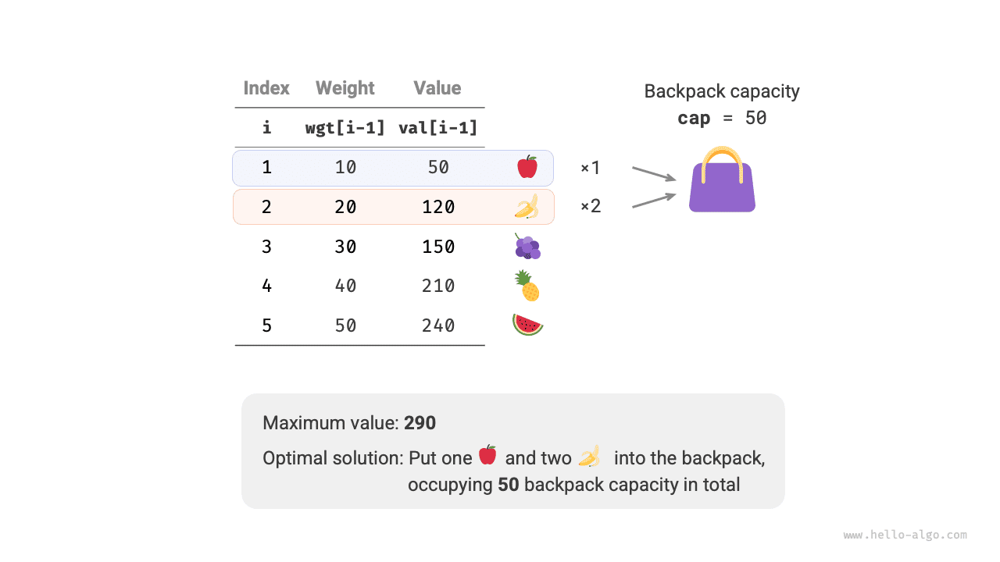
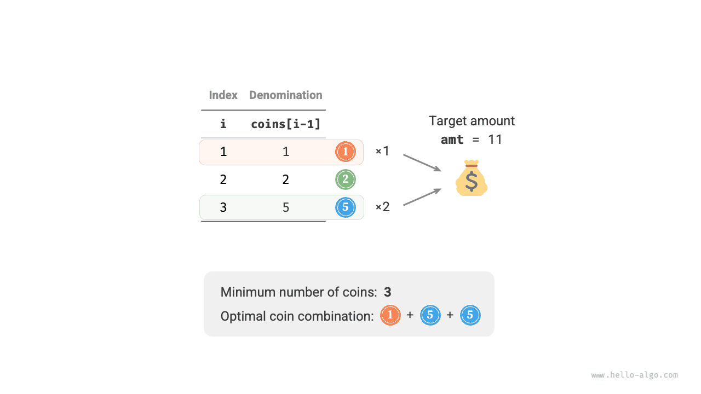
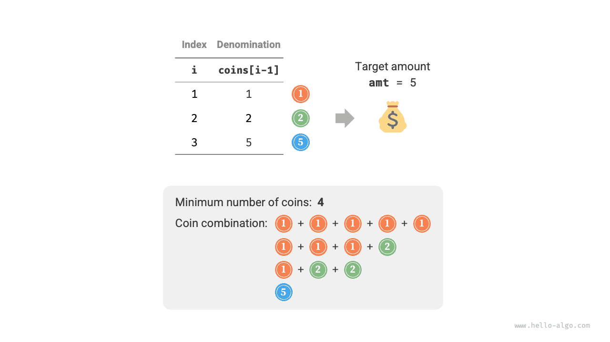

البرمجة الديناميكية
مشكلة الحقيبة غير المحدودة
في هذا القسم، نحل أولاً مشكلة أخرى شائعة من مسائل الحقيبة: الحقيبة غير المحدودة، ثم نستكشف حالة خاصة منها: مشكلة تغيير العملات.
مشكلة الحقيبة غير المحدودة
بمعطى $n$ من العناصر، حيث وزن العنصر $i$ هو $wgt[i-1]$ وقيمته $val[i-1]$، وحقيبة سعتها $cap$. يمكن اختيار كل عنصر عدة مرات. فما أقصى قيمة يمكن وضعها في الحقيبة ضمن حد السعة؟ ويوضح الشكل أدناه مثالاً على ذلك.

منهج البرمجة الديناميكية
تشبه مشكلة الحقيبة غير المحدودة مشكلة الحقيبة 0-1 إلى حد كبير، ولا تختلف عنها إلا في عدم وجود حد لعدد مرات اختيار العنصر.
- في مشكلة الحقيبة 0-1، توجد نسخة واحدة فقط من كل نوع من العناصر، لذا بعد وضع العنصر $i$ في الحقيبة، لا يمكننا الاختيار إلا من العناصر $i-1$ الأولى.
- في مشكلة الحقيبة غير المحدودة، كمية كل نوع من العناصر غير محدودة، لذا بعد وضع العنصر $i$ في الحقيبة، يمكننا الاختيار من العناصر $i$ الأولى.
وفي ظل قواعد مشكلة الحقيبة غير المحدودة، تنقسم تغيّرات الحالة $[i, c]$ إلى حالتين.
- عدم وضع العنصر $i$: كما في مشكلة الحقيبة 0-1، ننتقل إلى $[i-1, c]$.
- وضع العنصر $i$: على خلاف مشكلة الحقيبة 0-1، ننتقل إلى $[i, c-wgt[i-1]]$.
وبذلك تصبح معادلة انتقال الحالة:
$$ dp[i, c] = \max(dp[i-1, c], dp[i, c - wgt[i-1]] + val[i-1]) $$
تنفيذ الشيفرة
وبمقارنة شيفرة المشكلتين، نجد تغييراً واحداً في انتقال الحالة من $i-1$ إلى $i$، مع تطابق كل ما عدا ذلك:
تحسين المساحة
بما أن الحالة الحالية تنتقل من حالات على اليسار وفوق، فبعد تحسين المساحة ينبغي اجتياز كل صف في جدول $dp$ بالترتيب الأمامي.
وترتيب الاجتياز هذا معاكس تماماً لما في الحقيبة 0-1. يُرجى الرجوع إلى الشكل أدناه لفهم الفرق بين الاثنين.
وتنفيذ الشيفرة بسيط نسبياً، إذ يكفي حذف البُعد الأول من المصفوفة dp:
مشكلة تغيير العملات
تمثل مشكلة الحقيبة صنفاً واسعاً من مسائل البرمجة الديناميكية، ولها متغيّرات كثيرة، مثل مشكلة تغيير العملات.
بمعطى $n$ من أنواع العملات، حيث فئة النوع $i$ من العملات هي $coins[i - 1]$، والمبلغ المستهدف $amt$. يمكن اختيار كل نوع من العملات عدة مرات. فما أقل عدد من العملات اللازمة لتكوين المبلغ المستهدف؟ وإذا تعذّر تكوين المبلغ المستهدف، فأعد $-1$. ويوضح الشكل أدناه مثالاً على ذلك.

منهج البرمجة الديناميكية
يمكن النظر إلى مشكلة تغيير العملات على أنها حالة خاصة من مشكلة الحقيبة غير المحدودة، مع الروابط والاختلافات التالية.
- يمكن تحويل المشكلتين إحداهما إلى الأخرى: يقابل "العنصر" "العملة"، ويقابل "وزن العنصر" "فئة العملة"، وتقابل "سعة الحقيبة" "المبلغ المستهدف".
- هدفا التحسين متعاكسان: تهدف مشكلة الحقيبة غير المحدودة إلى تعظيم قيمة العناصر، بينما تهدف مشكلة تغيير العملات إلى تقليل عدد العملات.
- تبحث مشكلة الحقيبة غير المحدودة عن حلول "لا تتجاوز" سعة الحقيبة، بينما تبحث مشكلة تغيير العملات عن حلول "تكوّن بالضبط" المبلغ المستهدف.
الخطوة 1: فكّر في القرارات في كل جولة، وحدد الحالة، وبذلك تحصل على جدول $dp$
تقابل الحالة $[i, a]$ المسألة الفرعية: أقل عدد من العملات بين أنواع العملات $i$ الأولى يمكنه تكوين المبلغ $a$، ويُرمز إليه بـ$dp[i, a]$.
حجم جدول $dp$ ثنائي الأبعاد هو $(n+1) \times (amt+1)$.
الخطوة 2: حدد البنية الفرعية المثلى، ثم استنتج معادلة انتقال الحالة
تختلف هذه المشكلة عن مشكلة الحقيبة غير المحدودة في الجانبين التاليين فيما يتعلق بمعادلة انتقال الحالة.
- تبحث هذه المشكلة عن القيمة الدنيا، لذا يلزم تغيير المعامل $\max()$ إلى $\min()$.
- هدف التحسين هو عدد العملات لا قيمة العناصر، لذا عند اختيار عملة، أضِف $1$ فقط.
$$ dp[i, a] = \min(dp[i-1, a], dp[i, a - coins[i-1]] + 1) $$
الخطوة 3: حدد الشروط الحدية وترتيب انتقال الحالة
عندما يكون المبلغ المستهدف $0$، يكون أقل عدد من العملات اللازمة لتكوينه $0$، لذا تساوي جميع قيم $dp[i, 0]$ في العمود الأول $0$.
وعندما لا توجد عملات، يستحيل تكوين أي مبلغ $> 0$، وهو حل غير صالح. ولتمكين دالة $\min()$ في معادلة انتقال الحالة من تمييز الحلول غير الصالحة واستبعادها، نفكر في استخدام $+ \infty$ لتمثيلها، أي تعيين جميع قيم $dp[0, a]$ في الصف الأول إلى $+ \infty$.
تنفيذ الشيفرة
لا توفّر معظم لغات البرمجة متغيّراً بـ$+ \infty$، ولا يمكنها إلا استخدام القيمة العظمى للنوع الصحيح int بديلاً عنه. غير أن هذا قد يؤدي إلى تجاوز سعة الأعداد الصحيحة: إذ قد تتسبب عملية $+ 1$ في معادلة انتقال الحالة في التجاوز.
ولهذا السبب، نستخدم العدد $amt + 1$ لتمثيل الحلول غير الصالحة، لأن أقصى عدد من العملات اللازمة لتكوين $amt$ هو $amt$ على الأكثر. وقبل الإعادة، تحقق مما إذا كانت $dp[n, amt]$ تساوي $amt + 1$؛ فإن كان كذلك، فأعد $-1$، مما يدل على تعذّر تكوين المبلغ المستهدف. والشيفرة كما يلي:
يوضح الشكل أدناه عملية البرمجة الديناميكية لتغيير العملات، وهي تشبه مشكلة الحقيبة غير المحدودة إلى حد كبير.
تحسين المساحة
يُعالَج تحسين المساحة لمشكلة تغيير العملات بالطريقة نفسها المتبعة في مشكلة الحقيبة غير المحدودة:
مشكلة تغيير العملات II
بمعطى $n$ من أنواع العملات، حيث فئة النوع $i$ من العملات هي $coins[i - 1]$، والمبلغ المستهدف $amt$. ويمكن اختيار كل نوع من العملات عدة مرات. فما عدد توليفات العملات التي يمكنها تكوين المبلغ المستهدف؟ ويوضح الشكل أدناه مثالاً على ذلك.

منهج البرمجة الديناميكية
مقارنة بالمشكلة السابقة، هدف هذه المشكلة هو إيجاد عدد التوليفات، لذا تصبح المسألة الفرعية: عدد التوليفات بين أنواع العملات $i$ الأولى التي يمكنها تكوين المبلغ $a$. ويبقى جدول $dp$ مصفوفة ثنائية الأبعاد حجمها $(n+1) \times (amt + 1)$.
وعدد توليفات الحالة الحالية يساوي مجموع التوليفات الناتجة عن عدم اختيار العملة الحالية واختيارها. ومعادلة انتقال الحالة هي:
$$ dp[i, a] = dp[i-1, a] + dp[i, a - coins[i-1]] $$
عندما يكون المبلغ المستهدف $0$، لا حاجة إلى اختيار أي عملات لتكوين المبلغ المستهدف، لذا ينبغي تهيئة جميع قيم $dp[i, 0]$ في العمود الأول إلى $1$. وعندما لا توجد عملات، يستحيل تكوين أي مبلغ $>0$، لذا تساوي جميع قيم $dp[0, a]$ في الصف الأول $0$.
تنفيذ الشيفرة
تحسين المساحة
يُعالَج تحسين المساحة بالطريقة نفسها، إذ يكفي حذف بُعد العملات: